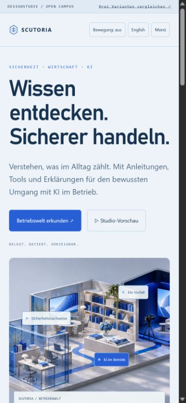
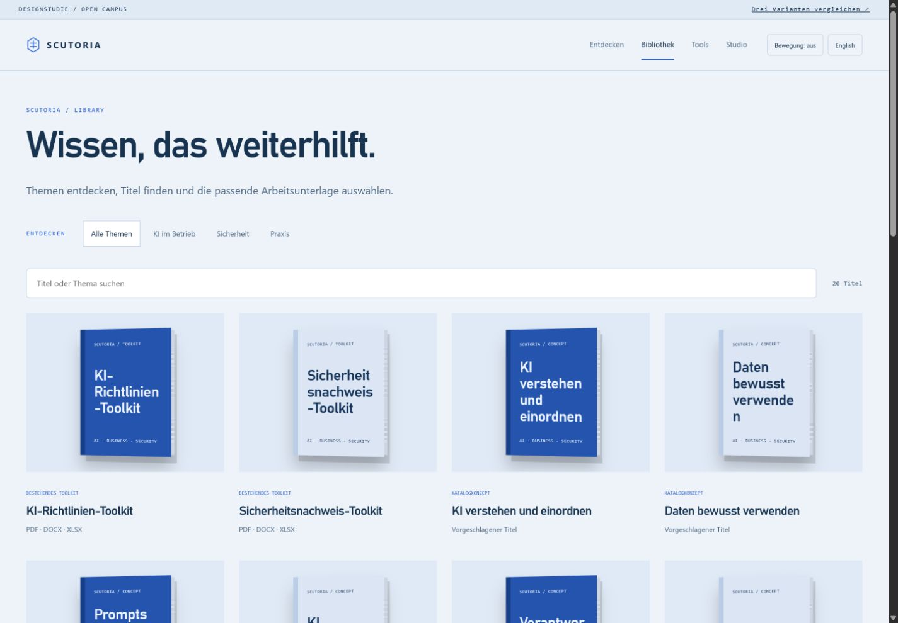
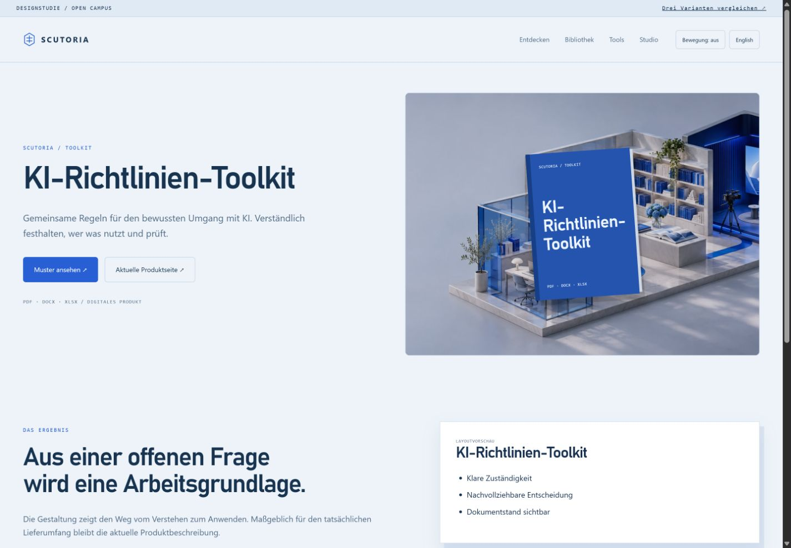
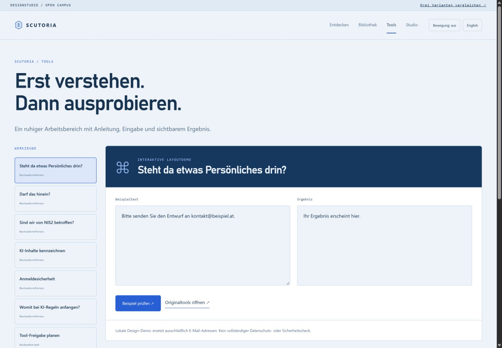

Heller Wissenscampus mit räumlichem Betriebsmodell und gezielt dunklen Medienbühnen. Offen, klar und hochwertig.





Designprototyp · zusätzliche Titel und Videoformate sind Konzepte · Bewegung in der interaktiven HTML-Vorlage.